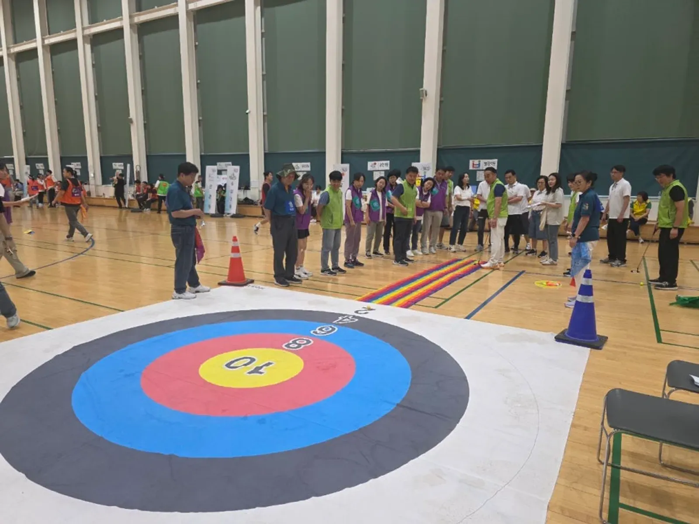
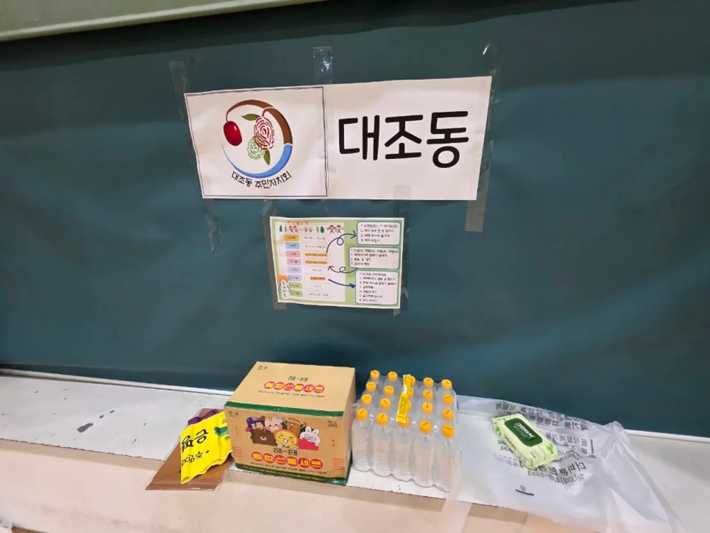

행사 준비 · 2026년 11월 27일
전래놀이, 실내 송년의 밤에는 윷놀이와 산가지 중 어느 쪽이 맞을까요?
전래놀이는 실내 송년의 밤에서 모두 한 판을 볼 수 있으면 윷놀이, 여러 탁자에서 조용히 마주 앉아 놀려면 산가지 모양 만들기가 어울립니다. 고를 때는 참석자의 나이보다 뒷자리에서도 말이 움직인 칸이나 막대를 옮긴 자리가 보이는지 먼저 보세요.

- 윷놀이를 줄일 때는 말 수와 길을 줄이고 도·개·걸·윷·모의 걸음 수는 남깁니다.
- 산가지는 같은 길이의 막대를 가지런히 놓고 한 변을 이웃 모양과 함께 쓰는 문제로 시작합니다.
- 두 놀이를 모두 넣지 않아도 됩니다. 한 자리에 놓을 수 있는 도구와 마칠 조건을 같이 정합니다.

1. 전래놀이 한 가지, 판을 어디에 놓을까요?
주민자치 모임에서 익숙한 놀이 이름을 꺼내도 각자가 떠올리는 한 판의 길이는 다릅니다. 이 글은 실내 송년의 밤을 위해 윷놀이와 산가지를 응용한 제안이며, 실제 행사 기록이나 전통 규칙의 재현이 아닙니다.
윷을 놓고 “여기서 걸이 나오면 어디로 갈까요?” 했을 때 멀리 앉은 사람도 다음 칸을 짚을 수 있는지 보세요.
길이 안 보이면 사회자가 결과만 중계하게 됩니다.
반면 산가지는 한 탁자 안에서 막대가 맞닿는 자리를 볼 수 있으면 됩니다. 모두 한 곳을 보는 구조가 아니라서 각 탁자가 다른 속도로 풀어도 괜찮습니다.
| 자리의 모습 | 추천 놀이 | 시작 전에 해 볼 일 |
|---|---|---|
| 반원으로 앉아 한 판을 보는 자리 | 짧은 윷길 | 맨 뒤 의자에서 출발과 도착 칸을 구별해 봅니다. |
| 작은 탁자 여러 개 | 산가지로 모양 만들기 | 맞은편에서 어느 두 막대가 닿았는지 짚어 봅니다. |
| 식기가 아직 놓인 자리 | 탁자가 비워진 뒤 시작 | 도구 둘 자리와 손을 뻗을 곳이 겹치면 놀이를 미룹니다. |
2. 윷은 한 개의 말을 함께 움직이는 짧은 판으로
종이에 출발점과 여섯 칸을 일렬로 그려 마지막 칸에 ‘송년 인사’라고 씁니다. 팀마다 경주하는 대신 탁자 하나가 말 하나를 함께 도착시키는 예입니다.
윷가락을 낮은 테두리가 있는 넓은 판 안에 가볍게 놓아 굴립니다. 네 가락이 겹쳐 뒤집힌 면을 구별할 수 없으면 말을 움직이지 말고 그 차례만 다시 합니다.
윷이 낯선 자리라면 납작한 면이 위로 한 개면 도, 두 개면 개, 세 개면 걸이라고 써 둡니다. 네 개 모두 납작한 면이면 윷, 모두 둥근 면이면 모입니다.
도는 한 칸, 개는 두 칸, 걸은 세 칸, 윷은 네 칸, 모는 다섯 칸입니다. 이 짧은 판에서는 잡기나 업기, 더 던지기는 쓰지 않는다고 시작 전에 알려 주세요.
가령 두 번째 칸에서 모가 나오면 남은 네 칸만 가고 도착으로 칩니다. 딱 맞는 수가 나올 때까지 기다리지 않으니 도착을 앞두고 모임이 길어지지 않습니다.
한 사람은 윷의 결과를 읽고 옆 사람은 칸을 손으로 짚으며 말을 옮깁니다. 다음 차례에는 두 일을 바꿔 한 사람이 윷과 말을 모두 쥐지 않게 합니다.

3. 산가지는 막대 일곱 개로 창문 두 칸 만들기
길이가 같은 끝이 둥근 막대 일곱 개와 무늬 없는 받침을 한 벌로 둡니다. 첫 문제는 “막대를 겹치거나 꺾지 말고 같은 크기의 네모 창문 두 개를 나란히 지어 주세요”입니다.
네 개로 첫 창문을 만들고 나면 세 개만 남습니다. 옆에 두 번째 네모를 따로 놓으려는 손이 멈추면 정답 대신 “옆집 창틀에서 빌려 쓸 수 있는 변이 있을까요?”
하고 물어보세요.
가운데 세로 막대 하나가 양쪽 창문의 변이 됩니다. 진행자가 완성품을 가져가 들지 말고, 탁자에서 왼쪽 네모와 오른쪽 네모를 손가락으로 각각 따라가 보게 합니다.
한 번 더 풀고 싶다면 같은 막대 중 다섯 개만 남겨 세모 두 개를 만들도록 합니다. 첫 세모의 한 변을 남기고 그 반대쪽에 두 변을 덧대면 막대 하나를 두 세모가 나눠 씁니다.
4. 익숙한 분의 다른 규칙도 들을 자리를 남깁니다
“우리 집 윷판은 윷이 나오면 한 번 더 던졌어요”라는 말이 나오면 옳고 그름을 가를 필요가 없습니다. 오늘은 하나의 말을 도착시키기 위한 짧은 판임을 다시 알려 드리면 됩니다.
산가지 답이 보기와 다르다면 받침을 돌려 봅니다. 세로로 포개진 두 네모도 같은 길이의 한 변을 나누면 가로 창문과 같은 풀이입니다.
끝을 정하는 신호는 순위가 아니라 완성된 모양이나 도착한 말입니다. 윷말이 닿으면 한 해를 보내는 인사를 건네고, 산가지 두 창이 나오면 옆 사람에게 함께 만든 변을 보여 주고 마칩니다.

5. 주민 모임 담당자와 사회자가 나눌 말
탁자마다 산가지를 푸는 동안 무대에서 답을 곧바로 말하면 아직 만져 보지 못한 자리가 생깁니다. 사회자는 “가운데에서 두 모양이 만납니다”라는 힌트까지만 주고, 답은 원하는 탁자에만 보여 주는 쪽이 좋습니다.
공공기관·주민 행사 안내와 송년회 사회·레크리에이션 안내에서 회사가 맡는 분야를 구분해 볼 수 있습니다. 윷과 산가지를 누가 준비할지는 참석 인원과 탁자 수를 알려 별도로 확인하세요.
자동 견적서에서 필요한 항목을 보고 견적 문의에는 “여러 탁자에서 조용히 풀고 마지막 인사만 함께할 예정”처럼 원하는 마무리를 적습니다. 도구를 특정해 두었다면 담당자가 가진 것과 필요한 것도 나눠 적습니다.
자주 묻는 질문
윷이 자꾸 판 밖으로 나가면 어떻게 하나요?
사람을 일으켜 도구를 쫓게 하지 말고 그 판은 멈춥니다. 낮게 굴려도 도구가 판 안에 머물지 않으면 그 자리에서는 막대를 놓아 만드는 놀이로 바꿉니다.
막대 색을 맞춰야 답인가요?
색이 아니라 변을 어떻게 놓았느냐가 문제입니다. 색을 모두 같게 하고 막대 끝이 만나는 자리와 두 모양이 나눠 쓰는 변만 확인하면 됩니다.
힐링엔터테인먼트는 송년의 밤에 어떤 일을 맡나요?
대표 MC 이현호가 송년회 사회와 레크리에이션을 직접 진행합니다. 행사에 필요한 음향·조명·무대도 함께 준비합니다.
행사 날짜가 정해지셨나요?
날짜 · 지역 · 인원 · 행사 종류만 알려 주시면 행사에 맞춰 상담 · 견적을 안내드립니다. 행사 중엔 통화가 어려우니 문자 · 카톡을 남겨 주세요.